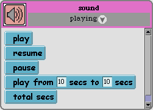

Scratch: A Pictoral Guide
by John Maloney
Last update: October 1, 2003
Introduction
Scratch is a multimedia construction environment for building
interactive projects combining graphics, animation,
sound, and video. You can build
interactive stories, simple games, animated music videos, or interactive
artwork. Using a special hardware interface and readily available Lego
components, you
can use switches and various kinds of sensors to control your
creations, or you could even create a kinetic sculpture that responds to
the viewer.
Like Lego or Tinkertoy, Scratch comes with a small set of building blocks
that can be combined in infinite ways to make your own creations. With Lego,
you sometimes run out of a particular shape or color of building block,
but in Scratch you never run out of objects because you can always make
new ones.
The Scratch building blocks are three basic objects: sounds, sprites,
and image boxes. Sound objects let you record, edit, and play short sounds
that can be used to for sound effects, character voices, or music.
Sprite objects are images that can move, rotate, and change size. They
are useful as characters in interactive stories or as elements in games.
Image box objects can used for playing movies, manipulating still images
(e.g., to create a slide show), or playing MP3 sounds.
At the heart of Scratch is a simple, drag-n-drop scripting system that
let's you control the things you make. Scripts are assembled from colorful
command blocks. It's very easy to get started yet there's plenty of power
to handle more advanced projects as your skills improve.
Scratch is designed to be used without much instruction and certainly without
a lengthy manual. Ideally, you'll have someone show you how to get started and
then you'd learn on your own by exploration. However, sometimes
you need a little help getting started, a reminder of where to find some
feature, or a hint about how to do something more advanced.
That's where this guide can help.
Enough words! On to some pictures...
Scratch Window
When you first open Scratch, you'll see this window:

- The dividers between panes can be dragged.
- The stop button stops everything: scripts, music, and movie playback.
- The object creation buttons create new sound, sprite, or image box objects.
- Usually the blocks pane and the scripts pane show the blocks and scripts for
the same object, but they don't have to. Occasionally you'll need to drag a block
from one object into the script for a different object. There are several ways
to control which object is viewed by each pane.
Scratch Menus
To get started, make a new sprite (use the button with the cat icon),
drop it into the work pane, and double-click on it. This will show the
command blocks and scripts for that sprite. Here's an annotated picture of
what you'll see with all the menus expanded out for easy reference:

-
Your sprite's
name will probably be different that the one shown; Scratch makes up
a new name for every object you create. You can change
the name by clicking on it in either the blocks or scripts pane.
-
The Scratch menu button lets you open and save Scratch projects, clear pen
trails (see the "pen down" sprite command), or set the single-stepping mode.
Single-stepping lets you see your scripts run in slow motion, which is
sometimes helpful when you're looking for a problem.
-
The blocks pane shows all the commands and variables for the selected
sprite. The commands are organized into categories. Click on
the white circle with the downward-pointing arrow to choose the
catetory to view.
-
The scripts menu lets you make a new script hat. Every script starts
with a hat. The hat lets you name the script and gives you a way to
start and stop the script. The cleanup command arranges your scripts
in a long row so you can scroll through them easily.
Object Menus
Each object has its own menu which you get by clicking the right mouse button
on it (or option-clicking on a Macintosh). Here are the menus for sound,
sprite, and image box objects:

- View blocks and view scripts let you view the blocks or scripts for this object without
changing the other pane. This is useful when you wish to use blocks from one object
in another object's scripts.
- Copy and delete do what they say. When you copy an object, all it's scripts
are copied as well. You can then change the scripts of either object without
effecting the scripts of the other one.
- Loading from a file loads the appropriate media into the the object. Sound objects
can load AIF or WAV audio files (but not MP3 files yet). Sprites can
load still images from GIF, BMP, or JPG files. Image boxes can load MPG movies,
MP3 files, or still images from GIF, BMP, or JPG files. Image boxes allow
you to play an MP3 file, although you can't record or edit it.
- If you have microphone, you can record your own sound and then
edit it with a simple sound editor. Although Scratch doesn't limit the
length of sounds, the editor becomes slow with sounds longer than a
minute or two. (We'll fix this problem in a later version of Scratch.)
- Sprites can be edited with a simple painting editor. You can make
your own sprites by editing with the default sprite picture.
Another way to make custom sprite graphics
is to use the "grab from screen" command. For example, if you've
made a cool pattern using the pen of a sprite you can grab and then edit it.
- When a sprite turns, it spins around its "center of
rotation". When you edit a sprite, its center of rotation is set to the
center of the picture you draw. Use the "set rotation center" command
if you want the sprite to rotate around some other point.
- The default sprite turns as it's heading changes. This is great for
top-down views but bad for side views. The "set rotation style" command allows
you to set the rotation style to "just flip left-right" or "don't rotate"
which work better for side views.
Scripting Overview
Scripts are created by dragging blocks from the blocks pane into the
scripts pane of the object to be scripted. Blocks can be snapped together
to create a sequence of commands that execute in order. A script starts
with a "script hat", a purple block with the script's name and an indicator
that turns green while the script is running or red if the script has
an error. Click on the script hat to start or stop that script.
Some command blocks have boxes containing numbers or other data. These boxes,
called "parameters", specify inputs to the command. For example, the
"turn" command has a parameter that says how many degrees the sprite turns.
You can change a parameter just by clicking on it and editing it. Certain
kinds of parameters, such as color parameters are set interactively,
for example by picking a color from a color palette.
You can also drop variable blocks or math blocks onto a parameter to
use the value of that variable or the result of that math operation as
the input to the command. Also, some blocks, such as "random" compute a value,
just like the math blocks do. Such blocks are sometimes called "reporters".
Reporter blocks can also be dropped into parameter boxes.
Command Blocks Shared by All Objects
This section describes the blocks that are shared by all the different kinds of objects.
Control Blocks
Control blocks are blocks that control the sequence or timing of
other command blocks.

-
The "if" block only executes the commands inside of itself if its parameter
is true. For example, an "if" block can be used to make a ball sprite
do something only when it touches a paddle sprite.
-
Scratch has four kinds of loop blocks that perform a set of commands
over and over. "Forever" does its commands until you
manually stop it. "Repeat" does its commands a fixed number of times.
"Until" and "while" do their commands either until their paremeter is true
or while it remains true.
-
"Wait" pauses the script for the given number of seconds.
-
"Done" and "answer" are used when you have one script calling another.
They both leave the called script and continue with the next command
in the calling script. "Answer" also returns a value that can
be used by the calling script. (If these blocks seem confusing, don't
worry; you won't need them for a while.)
File Blocks
File blocks allow your script to load or save media. For example, one
could make a slide show by loading a sequence of
images or photos into an image box. "Save" can be used to
store a pictures or sound in a file.

Math Blocks
Math blocks let you do arithmetic and other math operations.

-
The "+", "-", "*", and "/" blocks add, subtract, multiply,
or divide their inputs. Note that dividing by zero is an error.
If you accidentally do this, your script will stop and the indicator
will turn red to show that an error has occured. After you've fixed
the problem you can just click the script hat to run the script
again.
-
The "mod" block computes the first number modulo the second. For example, "9 mod 6" is 3.
Like divide, it is an error if the second input to "mod" is zero.
-
The "random" block chooses a random number between its first and second inputs. It gives
a different answer each time it is run. "Random" can be very useful in creating games
where there is an element of chance. For example, you can use it
to program a dice roll.
-
The "point" block makes a point object from two numbers. A few blocks,
such as "go to," take a point as their input.
-
The "copy" block makes a duplicate of a sprite or other object. This
can be used to make a bunch of similar objects, such as the bricks for
a breakout game.
Mouse and Keyboard Blocks
These blocks let you control things using the mouse or keyboard entry.

-
The "mouse pressed?" block reports true while any mouse button is pressed.
-
The "mouse position" block reports the current mouse position (a point).
-
The "key available?" block reports true if the user has typed a letter, number,
or symbol on the keyboard. Certain keys, such as shift, control, and alt do
not make a key available by themselves; they need to be combined with another key.
-
The "get key" block reports the letter, number, or symbol that the user
typed. Each time it runs, it gets the next key. So if the user types "cat"
then the next three times "get key" runs it will get "c", "a", and "t" in
that order.
Testing Blocks
Testing blocks are used to compare numbers or to combine
several true-or-false values.

-
The "<", "=", and ">" blocks compare two numbers and report true if
the first number is less than, equal to, or greater than the second.
-
The "and" block reports true only if BOTH of its inputs are true.
-
The "or" block reports true if at least one of its inputs is true.
-
The "not" block reports true if its input is false or false if its
input is true. (It's a very contrary block!)
Sprite Command Blocks and Variables
Sprites are objects that can move, rotate, and change size.
Sprite Motion Blocks

Sprite Sensing Blocks

Sprite Variables

Sound Command Blocks and Variables
Sounds objects are used for short (less than two or three minutes) sounds.
Sound Playing Blocks

Sound Variables

Image Box Command Blocks and Variables
Image box objects can hold still images, MPEG movies, or MP3 sounds. The image or
movie can be panned, zoomed, or faded to a sold color (e.g. fade to black).
Image Box Movie Blocks

Image Box Variables